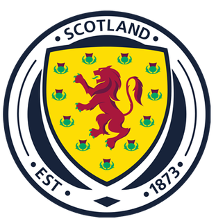

报告生成日期：2026年5月24日 · 2026美加墨世界杯
🏴 28年回归：自1998年法国世界杯后首次参赛 · C组· 与巴西+摩洛哥+海地同组
主教练：史蒂夫·克拉克（Steve Clarke）— 苏格兰人，2019年上任
队长：安迪·罗伯逊（Andy Robertson）— 利物浦左后卫
FIFA排名：约第30位
世界杯参赛次数：第9次
世界杯最佳成绩：小组赛（8次参赛全部小组出局😱）
上届（2022）成绩：未晋级（上次参赛1998年）
小组赛：C组
同组对手：巴西 🇧🇷、摩洛哥 🇲🇦、海地 🇭🇹
首战：6月13日 vs 海地（福克斯堡）— ⚠️ 必须赢
次战：6月19日 vs 摩洛哥（福克斯堡）
末轮：6月24日 vs 巴西（迈阿密花园）
📜 世界杯魔咒：8次参赛8次小组出局——世界杯历史上"参赛次数最多却从未小组出线"的球队
* 5月19日公布 · 10后卫32强最多 · 罗伯逊+麦克托米奈+麦金领衔 · 戈登43岁最年长球员
| 位置 | 球员姓名 | 英文名 | 俱乐部 | 联赛 |
|---|---|---|---|---|
| GK | ⭐ 克雷格·戈登 | Craig Gordon | 哈茨 | 苏超 · 43岁 |
| GK | 安格斯·冈恩 | Angus Gunn | 诺丁汉森林 | 英超 |
| GK | 利亚姆·凯利 | Liam Kelly | 流浪者 | 苏超 |
| DF | 格兰特·汉利 | Grant Hanley | 希伯尼安 | 苏超 |
| DF | 杰克·亨德利 | Jack Hendry | 阿尔埃蒂法克 | 沙特联 |
| DF | 阿隆·希基 | Aaron Hickey | 布伦特福德 | 英超 |
| DF | 多姆·海亚姆 | Dom Hyam | 雷克瑟姆 | 英甲 |
| DF | 斯科特·麦克纳 | Scott McKenna | 萨格勒布迪纳摩 | 克甲 |
| DF | 内森·帕特森 | Nathan Patterson | 埃弗顿 | 英超 |
| DF | 安东尼·拉尔斯顿 | Anthony Ralston | 凯尔特人 | 苏超 |
| DF | ⭐ 安迪·罗伯逊 (C) | Andy Robertson | 利物浦 | 英超 |
| DF | 约翰·苏塔 | John Souttar | 流浪者 | 苏超 |
| DF | 基兰·蒂尔尼 | Kieran Tierney | 凯尔特人 | 苏超 |
| MF | 瑞安·克里斯蒂 | Ryan Christie | 伯恩茅斯 | 英超 |
| MF | 芬德利·柯蒂斯 | Findlay Curtis | 基尔马诺克 | 苏超 |
| MF | 刘易斯·弗格森 | Lewis Ferguson | 博洛尼亚 | 意甲 |
| MF | 本·甘农-多克 | Ben Gannon-Doak | 伯恩茅斯 | 英超 |
| MF | 比利·吉尔摩 | Billy Gilmour | 那不勒斯 | 意甲 |
| MF | ⭐ 约翰·麦金 | John McGinn | 阿斯顿维拉 | 英超 |
| MF | 肯尼·麦克莱恩 | Kenny McLean | 诺维奇城 | 英冠 |
| MF | ⭐ 斯科特·麦克托米奈 | Scott McTominay | 那不勒斯 | 意甲 |
| FW | 切·亚当斯 | Ché Adams | 都灵 | 意甲 |
| FW | 林登·戴克斯 | Lyndon Dykes | 查尔顿 | 英甲 |
| FW | 乔治·赫斯特 | George Hirst | 伊普斯维奇 | 英超 |
| FW | 劳伦斯·尚克兰 | Lawrence Shankland | 哈茨 | 苏超 |
| FW | 罗斯·斯图尔特 | Ross Stewart | 南安普顿 | 英冠 |
🏴 核心六人组：罗伯逊（利物浦队长🏆）| 麦克托米奈（那不勒斯/意甲冠军）| 麦金（维拉队长）| 吉尔摩（那不勒斯）| 弗格森（博洛尼亚）| 蒂尔尼（凯尔特人/前阿森纳）— 英超+意甲骨干
| 指标 | 数据 |
|---|---|
| 英超球员 | 8人（罗伯逊/利物浦、麦金/维拉、吉尔摩/那不勒斯意甲、希基/布伦特福德等） |
| 意甲球员 | 3人（麦克托米奈+吉尔摩/那不勒斯、弗格森/博洛尼亚） |
| 利物浦队长 | 罗伯逊——世界前三左后卫，欧冠+英超冠军得主 |
苏格兰的阵容质量在C组中仅次于巴西，与摩洛哥旗鼓相当。安迪·罗伯逊是英超历史上最成功的左后卫之一——他在利物浦赢得过欧冠和英超冠军，他的传中和前插是苏格兰进攻端最重要的"武器发射器"。约翰·麦金在阿斯顿维拉是绝对核心——他的后插上得分、跑动覆盖和领袖气质使他成为苏格兰中场最不可替代的球员。斯科特·麦克托米奈在那不勒斯锻炼了一个出色的赛季——他的后排插上远射和禁区争顶是苏格兰定位球战术中最有效的得分手段。比利·吉尔摩在那不勒斯逐步成长——他的控球和短传能力为苏格兰中场增添了稀缺的技术元素。刘易斯·弗格森在博洛尼亚是意甲最受关注的中场之一——他的全面性使他成为"苏格兰下一个顶级球员"的热门候选。后防线上除了罗伯逊，蒂尔尼（凯尔特人/前阿森纳）在左路的竞争力提供了奢侈的轮换深度——苏格兰拥有两名"英超/欧冠级别"的左后卫。
10名后卫的配置是32强中最多的——这反映了克拉克的"先守再攻"哲学。三中卫或五后卫体系中，罗伯逊和蒂尔尼担任翼卫将使苏格兰的边路进攻极具威胁。中场8人的配置也是32强中最深厚的之一——麦金+麦克托米奈+吉尔摩+弗格森的组合在技术完整性和战术多样性上可媲美不少欧洲强队。锋线5人是最薄弱的环节——切·亚当斯（都灵/意甲）是唯一在五大联赛踢球的前锋，戴克斯（英甲）、赫斯特（英超伊普斯维奇轮换）、尚克兰（苏超）和斯图尔特（英冠）的进球效率在世界杯级别上令人担忧。
中后场的深度相当可观——10名后卫+8名中场意味着克拉克有充足的轮换选择。但锋线深度不足——如果亚当斯状态不佳或受伤，替补前锋来自英甲/苏超级别，进球能力将断崖式下降。
全队总身价约2亿欧元（32强中游）。核心球员年龄合理（麦金31岁、罗伯逊32岁、麦克托米奈29岁、弗格森26岁、吉尔摩24岁）。戈登（43岁）是年龄隐患但他是第三门将。
维度一总评：62分 × 30% = 18.6分
史蒂夫·克拉克自2019年起执教苏格兰，是队史最成功的教练之一——率队连续参加2020和2024两届欧洲杯（2020年小组出线、2024年小组赛但表现出色），并历史性时隔28年重返世界杯。他的战术以"务实防守+高效定位球"为核心——苏格兰在2024欧洲杯上通过定位球打入3球（占比50%）。
克拉克的招牌阵型是3-4-2-1或5-4-1——三中卫（汉利+亨德利+麦克纳/苏塔）提供防守深度，翼卫（罗伯逊+希基/帕特森）是进攻发起点，双前腰（麦金+麦克托米奈）后插上冲击。
苏格兰的攻守转换并不以速度见长——他们更依赖定位球和边路传中。麦金的后插上是转换中最大的威胁点。
克拉克在欧洲杯上的换人决策总体稳健——他懂得在领先时巩固防守、在落后时增加进攻人数。2024欧洲杯对阵匈牙利时他在第86分钟换上进攻球员搏命（虽然最终被绝杀），展现了他的勇气。
维度二总评：67.5分 × 20% = 13.5分
苏格兰在欧洲区预选赛中表现出色——以小组第二身份直接晋级（击败了挪威、以色列等队）。2024欧洲杯上虽然小组出局但表现值得尊重（1-1平瑞士、1-5负德国、0-1负匈牙利）。
欧洲区预选赛的竞争力不容置疑——苏格兰在关键战中展现了抗压能力。
| 球员 | 本赛季表现 | 状态 |
|---|---|---|
| 罗伯逊（利物浦） | 英超28场，助攻6次，左路发动机 | ✅ 稳定 |
| 麦金（维拉） | 英超32场7球8助攻，核心 | 🔥 火热 |
| 麦克托米奈（那不勒斯） | 意甲26场6球，后插上利器 | 🔥 火热 |
| 吉尔摩（那不勒斯） | 意甲22场，中场节拍器 | ✅ 稳定 |
| 弗格森（博洛尼亚） | 意甲24场5球，全能中场 | ✅ 稳定 |
| 亚当斯（都灵） | 意甲20场4球，锋线首选 | ⬇️ 一般 |
苏格兰中场的俱乐部状态是近年来最好的——麦金在维拉迎来了职业生涯巅峰，麦克托米奈在那不勒斯成为关键球员，弗格森在博洛尼亚持续进化。
维度三总评：67分 × 15% = 10.05分
苏格兰是世界杯历史上最大的"小组赛专业户"——8次参赛8次小组出局，这个纪录既尴尬又独特。1998年是最近一次，当时1-2巴西、1-1挪威、0-3摩洛哥——小组垫底出局。
罗伯逊参加过2020和2024欧洲杯，麦金、麦克托米奈、吉尔摩也有欧洲杯经验。但世界杯是全新的体验——福克斯堡首战海地时的紧张感和压力可能与欧洲杯完全不同。
苏格兰以"战斗精神"著称——"格子军团从不轻易认输"这句话在苏格兰身上同样适用。对阵海地的首战是"必须赢"的比赛——苏格兰需要证明自己配得上28年后的回归。
维度四总评：55分 × 10% = 5.5分
| 对手 | 苏格兰胜率 |
|---|---|
| 海地 🇭🇹 | 65-70% ✅ 必须赢 |
| 摩洛哥 🇲🇦 | 40-45% ⚔️ 关键战 |
| 巴西 🇧🇷 | 15-20% 💪 少输当赢 |
C组出线形势：巴西锁定第一（95%），摩洛哥和苏格兰争夺小组第二——这意味着6月19日苏格兰vs摩洛哥将是一场"谁赢谁出线"的生死战。
如果小组第二出线，16强将对阵D组第一（可能法国/荷兰/英格兰），胜率不高。但进入16强本身就将打破苏格兰"8次小组出局"的魔咒——这已经是历史性突破。
前两场在福克斯堡（马萨诸塞州/新英格兰地区，气候温和），末战在迈阿密（湿热）。福克斯堡→迈阿密的移动合理。
维度五总评：50分 × 10% = 5.0分
罗伯逊是足球界最受尊敬的队长之一——他的领导风格以"谦逊但坚定"著称。克拉克与球员的关系非常融洽，苏格兰的团队氛围以团结和斗志闻名。
苏格兰足协（SFA）管理规范，为世界杯备战提供了良好的后勤保障。
苏格兰国内对世界杯的期待是"复杂"的——既有28年回归的狂喜，也有"8次小组出局"的历史阴影。媒体和球迷的共识是：至少赢一场（海地），争取赢两场（出线）。
维度六总评：65分 × 10% = 6.5分
英超+意甲的球员刚结束漫长赛季。戈登43岁需要特别管理。
蒂尔尼的伤病史是最大隐患。其他核心球员健康。
SFA提供了英国标准的医疗保障。
维度七总评：60分 × 5% = 3.0分
加权总分：62.15 / 100
实力评级：C-（新的评级描述）
| 维度 | 得分 | 权重 | 加权贡献 |
|---|---|---|---|
| ① 阵容实力 | 62 | 30% | 18.60 |
| ② 战术体系与教练 | 67.5 | 20% | 13.50 |
| ③ 近期竞技状态 | 67 | 15% | 10.05 |
| ④ 大赛经验与心理素质 | 55 | 10% | 5.50 |
| ⑤ 分组及赛程影响 | 50 | 10% | 5.00 |
| ⑥ 团队凝聚力与场外环境 | 65 | 10% | 6.50 |
| ⑦ 体能储备与伤病控制 | 60 | 5% | 3.00 |
| 总分 | 62.15 | ||
🏴 约翰·麦金
阿斯顿维拉核心，本赛季7球8助攻。苏格兰的"灵魂人物"——他的斗志、后插上和关键传球是苏格兰进攻端最可靠的引擎。
🏴 安迪·罗伯逊 (C)
利物浦队长，世界顶级左后卫。他的传中是苏格兰"唯一的常规进攻手段"——对阵海地时的助攻数据将直接决定比赛走向。
🏴 斯科特·麦克托米奈
那不勒斯中场，意甲6球。1米93的身高+后排插上是苏格兰定位球战术中的"核武器"——对阵摩洛哥的关键战，很可能要靠他的头球打破僵局。
🏴 刘易斯·弗格森
博洛尼亚中场，意甲24场5球——被誉为"苏格兰的杰拉德"。他的全面性和大心脏是克拉克在生死战中最信任的"X因素"。
| 对手 | 预判 |
|---|---|
| 海地 🇭🇹 | 苏格兰 2-0 胜 — 开局至关重要 |
| 摩洛哥 🇲🇦 | 苏格兰 1-1 平 — 生死战五五开 |
| 巴西 🇧🇷 | 苏格兰 0-3 负 — 少输当赢 |
小组赛综合：1胜1平1负积4分，出线概率约40-45%。
核心判断：苏格兰是C组中最"不确定"的变量。他们的中场实力（麦金+麦克托米奈+吉尔摩+弗格森）在32强中属于中上游，罗伯逊的传中是世界级武器。但锋无力和8次小组出局的历史包袱是两座难以逾越的大山。出线公式简单明了：首战赢海地（3分）→ 次战拼摩洛哥（保平争胜=1或3分）→ 末战壮烈输巴西（0分）→ 4分为小组第二出线。如果苏格兰能击败海地，然后在对阵摩洛哥的生死战中发挥出"永不放弃"的战斗精神——28年的等待终于可以在福克斯堡的夜空下找到一个圆满的句号。
"28年——一代苏格兰人从出生到成年的时间。1998年风笛在法兰西响起的时候，麦金还是个三岁的孩子，罗伯逊才四岁，戈登刚在哈茨踏上职业生涯的第一班岗。如今罗伯逊是利物浦的传奇、麦金是维拉的英雄、戈登43岁仍然站在球门前。C组的巴西是天空、摩洛哥是山、海地是必须跨过的第一道坎——而苏格兰要证明的，不是他们能走多远，而是他们终于来了。"
© 2026 足球战力分析 · Powered by WorkBuddy AI